Combating the Memory Walls: Optimization Pathways for Long-Context Agentic LLM Inference
总结
大语言模型（LLM）正日益成为各类AI智能体（Agent）的核心骨干，涵盖工具调用、命令行交互、网页与计算机操作等场景。这些智能体推理任务与传统的聊天机器人推理截然不同——它们需要处理极长的上下文窗口（如完整网页DOM或复杂工具调用轨迹），从而在推理阶段产生巨大的片外存储流量，导致工作负载同时受限于带宽墙和容量墙两道"存储墙"。
As-is: 当前的主流加速器（如GPU和TPU）普遍采用方形脉动阵列（如TPU v3的128×128阵列）来执行通用矩阵乘法（GEMM）。然而，在长上下文智能体推理中，由于KV缓存占用大量HBM容量，批处理大小（即GEMM的M维度）远小于其他维度，形成"胖GEMM"（fat GEMM）的不均匀矩阵形状，导致方形阵列的计算资源利用率严重低下。同时，随着上下文长度增长，KV缓存线性膨胀（如LLaMA-3-70B在128K上下文下FP16 KV缓存约39GB），HBM容量成为主要瓶颈。现有加速器也缺乏对FlashAttention的原生支持，注意力计算中的中间结果需要在片外存储间往返，进一步加剧带宽压力。此外，现有PTQ量化方法与微缩放（Microscaling, MX）数据格式的兼容性尚未被充分探索，直接应用旋转等优化技术反而导致模型性能退化。
To-be: PLENA通过三条核心优化路径系统性突破存储墙：（1）扁平化脉动阵列架构，将阵列形状从方形改为扁平（如8×512），使BLEN维度与受限的批处理大小对齐，在FFN和FlashAttention阶段均实现高利用率；（2）非对称量化方案，对权重/激活/KV缓存分别采用不同精度（如W4A4KV4），配合块级裁剪优化和选择性旋转策略，在保持模型精度的同时缓解带宽与容量双重压力；（3）原生FlashAttention支持，通过可转置Matrix SRAM、细粒度ISA指令和片上融合计算消除中间结果的片外往返。在相同乘法器数量和存储配置下，PLENA相比A100 GPU实现最高2.23倍吞吐量提升，相比TPU v6e实现4.70倍提升，能效比A100高出4.04倍。PLENA还提供完整的软硬件栈，包括自定义ISA、编译器、事务级仿真器和自动化设计空间探索流程，并将全部开源。
---
背景
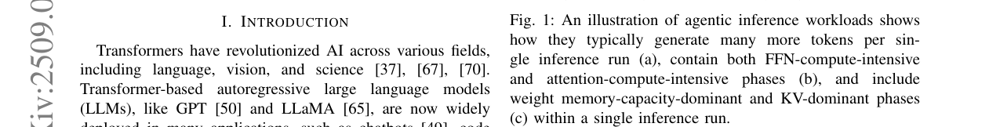
Transformer架构的自回归大语言模型（如GPT、LLaMA）已从最初的聊天机器人扩展到工具调用、计算机操作和命令行智能体等复杂应用场景。这些智能体工作负载的上下文需求远超传统对话场景。如图1(a)所示，智能体工作负载（如Computer Use Agent和Web Use Agent）每次推理平均消耗的token数量是标准聊天机器人的100倍，极端情况下可达1000倍。为应对这一趋势，现代LLM的上下文窗口不断扩展：GPT-3约2K tokens，GPT-4达32K tokens，LLaMA-4-Maverick扩展至1M tokens。
长上下文智能体推理在计算和存储两个维度都带来独特挑战。在计算方面，如图1(b)所示，以LLaMA-3-70B为例，当生成token数量较少时，前馈网络（FFN）贡献大部分FLOPs；但随着序列增长，注意力层逐渐主导计算量。在LongWriter工作负载中，预填充阶段在约5K tokens处完成，随后解码阶段将上下文扩展至85K tokens，计算强度从FFN主导向注意力主导的交叉点大约出现在19K生成token处。这意味着FFN和注意力层都是必要的优化目标。
在存储方面，如图1(c)所示，存在两个主要限制因素：一是大量KV值和权重的读取以及KV值的写回产生巨大的带宽需求；二是KV缓存随上下文长度线性增长，往往超过模型权重大小，使HBM容量成为首要瓶颈。例如LLaMA-3-70B在128K上下文下，单批FP16 KV缓存约39GB。论文将这两个挑战统称为"存储墙"（memory walls）——带宽墙和容量墙，它们共同阻止计算单元达到峰值利用率。
在微缩放数据格式方面，MX格式由Open Compute Project标准化，每个数据块共享一个E8M0幂次缩放因子。如图3所示，PLENA采用可配置的单级缩放方案，参数化为(M, E, S, B)用于MXFP和(M, S, B)用于MXINT，在硬件复杂度和软件性能之间取得平衡。
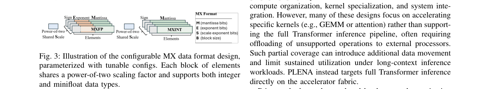
问题
论文针对的核心问题可以从以下几个层面理解：
1. 方形脉动阵列与长上下文工作负载的架构性失配。 现有硬件（如TPU v3的128×128阵列）的M、K、N维度设计为接近的尺寸。但在长上下文智能体推理中，由于KV缓存占用大量HBM容量，批处理大小（即GEMM的M维度）被迫保持远小于隐藏维度（K维度，如LLaMA-3-8B的4096或LLaMA-3-70B的8192）。这导致"胖GEMM"操作，矩阵形状严重不均匀，方形脉动阵列和Tensor Core的计算资源利用率大幅下降。
2. 带宽墙与容量墙的双重制约。 带宽方面，大量KV值和权重的读取产生巨大片外存储流量；容量方面，KV缓存随上下文线性增长，限制了可同时驻留芯片的批处理数量，进一步加剧M维度受限的问题。虽然存在offloading技术，但它们使系统更加受限于存储I/O。
3. FlashAttention在脉动阵列上的原生支持缺失。 现有大多数基于脉动阵列的加速器无法原生支持FlashAttention，原因包括四点：（1）不支持片外存储预取与计算的tile级重叠；（2）缺乏转置读取和高效跨步/分块流式传输等存储布局支持；（3）仅暴露GEMM原语，缺乏在线softmax所需的行内归约和非线性操作（max/sum、exp、div）；（4）ISA强制固定调度和粗粒度内核边界，限制细粒度tile-by-tile执行和融合计算模式。
4. PTQ优化技术与MX数据格式的不兼容性。 论文发现，现有SoTA PTQ方法（如GPTQ和QuaRot）在MX数据格式下存在严重问题：对权重量化，MXFP与PTQ优化普遍不兼容，MXINT虽兼容但直接应用会导致性能退化；对激活量化，QuaRot的Hadamard旋转直接应用于MXINT和MXFP均导致性能退化。这些不兼容性此前的文献中未被充分识别和解决。
解决方案
PLENA（Programmable Long-context Efficient Neural Accelerator）是一个软硬件协同设计的系统，通过三条优化路径系统性地解决长上下文智能体推理中的存储墙问题。
整体架构
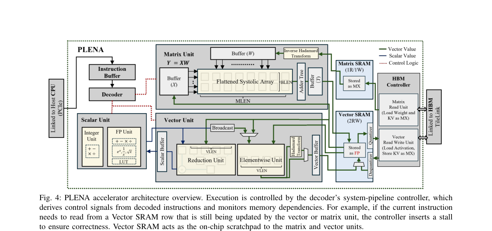
如图4所示，PLENA采用指令级流水线，主要由三个计算单元组成：Matrix Unit（矩阵单元）、Vector Unit（向量单元）和Scalar Unit（标量单元）。所有单元高度可配置，支持多种数据类型和精度。片上存储包括两个主要SRAM块：Vector SRAM作为计算暂存区，存储频繁使用的激活数据；Matrix SRAM专用于加载权重和KV张量，支持转置和非转置访问模式。
Pathway 1：扁平化脉动阵列
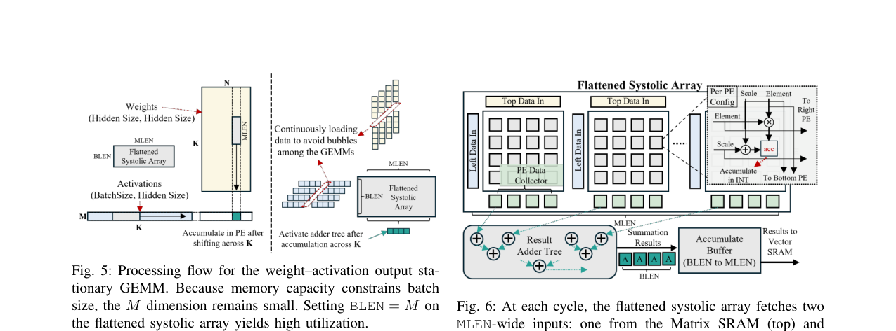
PLENA的核心架构创新是扁平化脉动阵列。如图5所示，在FFN层中，由于存储容量约束批处理大小，M维度保持较小值。传统方形阵列（如264×64）在M远小于K时利用率低下，而PLENA的扁平阵列（如8×512）通过设置BLEN=M实现高利用率。
每个处理单元执行(BLEN, MLEN)×(MLEN, BLEN)的GEMM，产生(BLEN, BLEN)输出。BLEN通常配置为远小于MLEN以匹配长上下文推理的工作负载特征。对于FlashAttention模块，阵列被划分为多个更小的扁平阵列核心，每个核心执行(BLEN, HLEN)×(HLEN, BLEN)的GEMM，跨(MLEN//HLEN)个头并行计算。
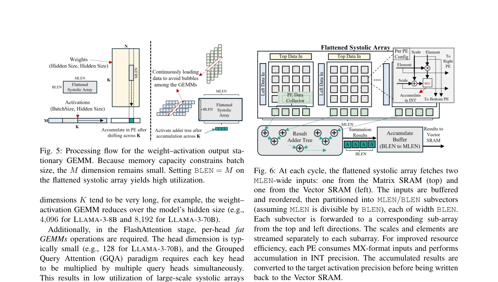
如图6所示，扁平脉动阵列由一系列小型方形子阵列（sub-arrs）构成，每个子阵列包含PE网格。每个PE执行乘累加操作并将数据传递给下方和右侧的相邻PE。阵列采用输出驻留（output-stationary）数据流：操作数沿大 reduction 维度K流动，部分和驻留在PE中。阵列完全流水线化，消除连续GEMM tile之间的空闲气泡。
由于单个子阵列仅累积部分和，完整的(BLEN, BLEN)输出需要跨阵列归约。PLENA集成了结果加法树（result adder tree），通过专用指令`MSUM`高效执行跨阵列求和——仅需在大reduction维度计算完成时执行一次跨阵列求和，避免气泡并提高计算效率。每个PE接收MX格式输入并在INT精度下累加，结果在写回Vector SRAM前转换为目标激活精度。
Pathway 2：非对称量化方案
PLENA的非对称算术数据路径具有以下特征：
- 激活以高精度浮点格式存储在片上Vector SRAM中，因为它们对量化误差更敏感；
- KV和权重以低精度MX格式（MXFP或MXINT）暂存于Matrix SRAM中，可更激进地量化；
- 可选的片上旋转步骤可在量化前抑制异常值。
在KV缓存追加新K和V向量时，选择性应用基于Hadamard的旋转来抑制异常值，然后量化为MX数据类型存入HBM。由于K和V仅被注意力GEMM消费，它们直接加载到Matrix SRAM中，在使用前应用逆Hadamard变换。旋转/逆旋转阶段可按张量选择性应用——例如加载到矩阵单元的权重绕过逆变换。
权重量化优化——块级裁剪： 论文提出微缩放块级裁剪（microscaling block-wise clipping）技术。对每个数据块w，引入裁剪参数p∈[0.5, 0.99]，将有效范围缩小到[p·min_w, p·max_w]。通过在离散集合P上搜索获得最优裁剪参数p*。该技术直接集成到GPTQ的迭代误差传播流程中，并提出新的输出范数引导的块级裁剪搜索——最小化输出块而非权重块的量化误差：
$$P_b^* = \arg\min_{P_b \in P^N} \|X_b(W_b - Q(W_b; P_b, \tau))^\top\|_2^2$$
实验表明，优化裁剪在LLaMA-3-8B的4位仅权重量化中将困惑度改善了5.5%。
激活量化优化——选择性旋转： 论文发现，将QuaRot的Hadamard旋转直接应用于细粒度权重量化（如小块MXINT）反而增加困惑度，因为权重的动态范围较小，大多数权重异常值已被共享指数捕获。因此提出选择性旋转策略：仅对激活应用旋转，通过最小化各层性能损失之和来选择需要旋转的层子集S。关键区别在于，当旋转应用于激活时，需要在运行时执行H^{-1}乘法，PLENA为此提供原生硬件支持。
Pathway 3：原生FlashAttention支持
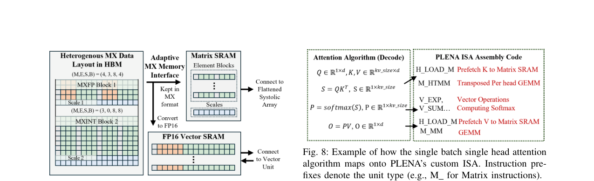
PLENA通过以下机制解决FlashAttention原生支持的四个挑战：
挑战(1)和(2)通过Matrix SRAM解决。如图9所示，Matrix SRAM将每个逻辑行分布到多个子SRAM bank中，将同一行的元素存储在不同bank的不同地址。这种布局确保行访问和列访问映射到不同bank，允许转置和非转置访问并行进行而无bank冲突，避免显式数据重排。硬件预取引擎集成到Matrix和Vector SRAM中，通过`H_LOAD_M`和`H_LOAD_V`指令控制，实现从HBM的后台预取和数据流式传输。
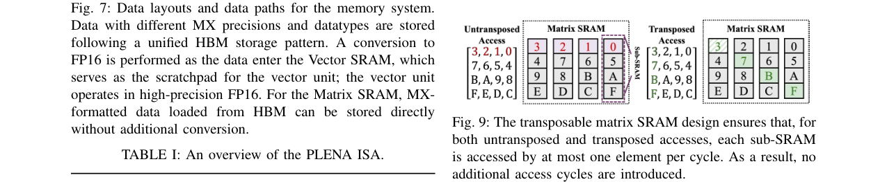
挑战(3)通过向量单元和标量单元解决。向量宽度（VLEN）可配置以匹配FlashAttention使用的tile维度。计算精度也可配置，通常设为较高精度（如FP12）以保持softmax计算的数值精度。
挑战(4)通过自定义ISA解决。PLENA ISA提供可组合的细粒度控制，支持融合注意力流水线的持久化tile-by-tile调度。如图8所示，单批次单头注意力算法可映射到PLENA的指令序列上，每个FlashAttention阶段可在tile粒度上单独编排。
PLENA ISA
PLENA ISA包含5类指令（表I）：Matrix(M)类6条指令控制GEMM和GEMV操作；Vector(V)类13条指令执行元素级和归约操作及量化旋转；Scalar(S)类17条指令执行标量INT和FP运算；HBM(H)类3条指令处理HBM与SRAM间数据传输；Control(C)类8条指令定义操作设置如HBM地址和嵌套循环配置。每条指令32位，通过PCIe从CPU动态派发到指令缓冲区。
非对称存储平衡
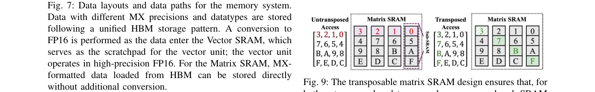
如图7所示，HBM中所有数据以MX格式存储。由于将数据块与其逐块缩放因子拼接很少能产生与2的幂次存储边界对齐的组合大小，PLENA将每个张量的块和对应缩放因子分开存储，确保两者都正确对齐存储边界。数据进入Vector SRAM时转换为FP16（向量单元以高精度FP16运行），而Matrix SRAM中从HBM加载的MX格式数据可直接存储无需额外转换。
软件栈与协同设计框架
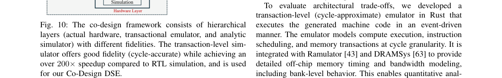
PLENA提供完整的编译和仿真框架（图10）。编译器轻量化设计：解析模型配置文件的元数据并映射到预定义的PLENA ISA汇编模板。事务级仿真器用Rust编写，以事件驱动方式执行机器码，在周期粒度上建模计算执行、指令调度和存储事务。它与Ramulator和DRAMSys集成，提供详细的片外存储时序和带宽建模。如表II所示，事务级仿真器相比RTL仿真实现约200倍加速，延迟误差仅4.17%，面积误差4.79%。
协同设计DSE采用多目标贝叶斯优化（BO），使用BOTorch在精度、延迟和面积三个目标上探索Pareto前沿。搜索空间（表III）涵盖BLEN[2-64]、MLEN[2-1024]、VLEN[2-1024]、激活精度（MXINT/MXFP）、KV精度（MXINT/MXFP）等参数，并施加存储带宽约束（MLEN·KV_WIDTH ≤ MemBandwidth）等约束条件。
测试结果
实验设置
- 模型与数据集：LLaMA-2、LLaMA-3、MoE（GPT-OSS）和Qwen3模型，量化性能以WikiText-2困惑度衡量。量化过程在NVIDIA H100 GPU上需约2-20 GPU小时。
- 量化基线：GPTQ、OmniQuant、QuaRot、Atom、MicroScopiQ等。
- 加速器实现：PLENA用SystemVerilog RTL实现，使用Synopsys Design Compiler和7nm OpenROAD预测PDK综合，1GHz时钟频率。
- 加速器基线：MicroScopiQ、FIGNA、Olive的核心组件被重新实现并集成到PLENA系统中进行公平比较。同时与A100 80GB、H100 80GB GPU和TPU v6e-8进行对比。
设计空间探索结果
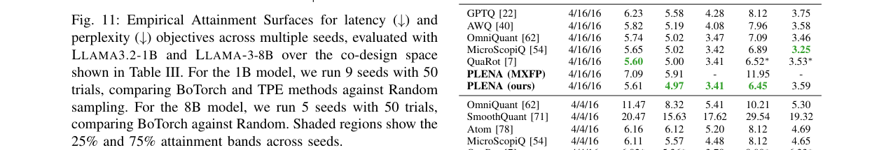
图11展示了LLaMA3.2-1B和LLaMA-3-8B上的经验可达性曲面（EAS）。BoTorch采样器在延迟和困惑度之间的权衡显著优于随机采样。TPE在1B模型上相比BoTorch增益较小。
表IV展示了LLaMA-3-8B上多目标搜索的四个代表性Pareto前沿设计点。例如，一个设计点采用BLEN=32、MLEN=512、MXFP E4M3激活、MXFP E3M4 KV，实现困惑度6.70、延迟0.137s、面积137.6mm²；另一个采用BLEN=16、MLEN=128、MXINT 8激活、MXFP E4M3 KV，实现困惑度6.60、延迟0.174s、面积仅23.64mm²。
量化精度结果
表V展示了WikiText-2困惑度结果。在4/4/4（W/A/KV全部4位）的激进量化设置下，PLENA在LLaMA-2-7B上实现5.89困惑度，优于QuaRot的6.10和QuaRot-128G的5.93；在LLaMA-3-8B上实现7.22，优于QuaRot的8.16。值得注意的是，PLENA的MXFP方案在低精度下表现极差（如4/4/4下LLaMA-3-8B达256.22），验证了MXINT配合PTQ优化作为权重量化de-facto方案的必要性。
表VI的消融实验揭示了各量化技术对MX数据格式的影响：MXFP4基线困惑度为29.75，加入选择性旋转后降至14.50但仍不理想；MXINT4基线为7.24，加入旋转后6.98，加入选择性旋转后7.05，加入Err_y裁剪后6.45，最终完整系统（Err_y裁剪+选择性旋转）为7.22。这证实了块级裁剪对MXINT的关键作用以及旋转应仅选择性应用于激活。
表VII的零样本下游任务评估显示，在LLaMA-3-8B的4/4/4量化下，PLENA在6个任务上的平均准确率为70.39%，显著优于QuaRot的65.18%，接近FP16基线的73.22%。
系统性能
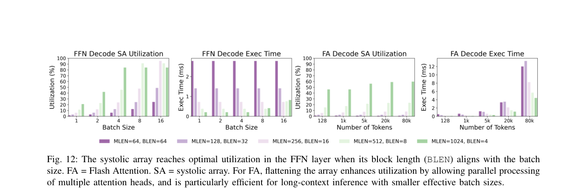
图12展示了脉动阵列在FFN层和FlashAttention中的利用率。当BLEN与批处理大小对齐时，FFN层达到最优利用率；对于FlashAttention，扁平阵列通过头级分解实现高利用率。
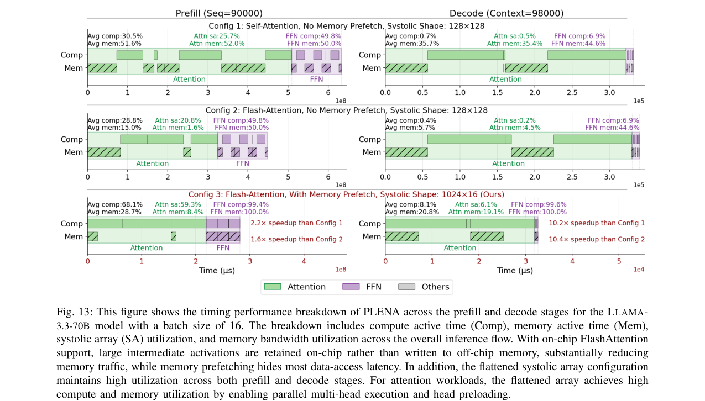
图13展示了LLaMA-3.3-70B模型在批处理大小16下PLENA在预填充和解码阶段的时序性能分解。
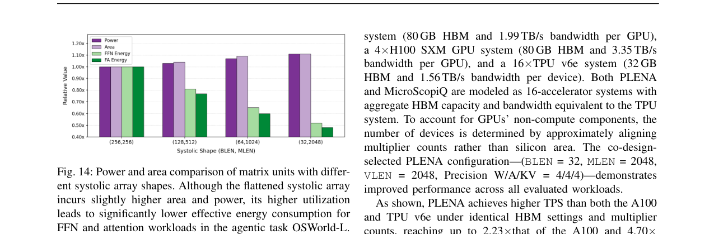
图14比较了不同脉动阵列形状的矩阵单元的功耗和面积。扁平脉动阵列虽然面积和功耗略高，但利用率显著提升，整体能效更优。
在系统级性能方面，在相同乘法器数量和存储配置下，PLENA相比A100 GPU实现最高2.23倍吞吐量提升，相比TPU v6e实现4.70倍提升，能效（Token/J）比A100高出4.04倍。PLENA还支持多种SOTA Transformer变体，包括GQA、MHA、MLA、Dense和MoE模型。
局限性
论文未深入讨论以下方面的局限性：（1）扁平化阵列的面积和功耗开销（图14显示略高于方形阵列）；（2）DSE搜索过程在1B模型上快速迭代后扩展到8B，更大模型的验证尚未展示；（3）旋转操作在运行时引入的额外计算开销的定量分析有限；（4）与H100 GPU和最新TPU版本的对比不够充分（主要对比A100和TPU v6e）；（5）实际流片验证尚未完成，结果基于RTL综合和仿真。